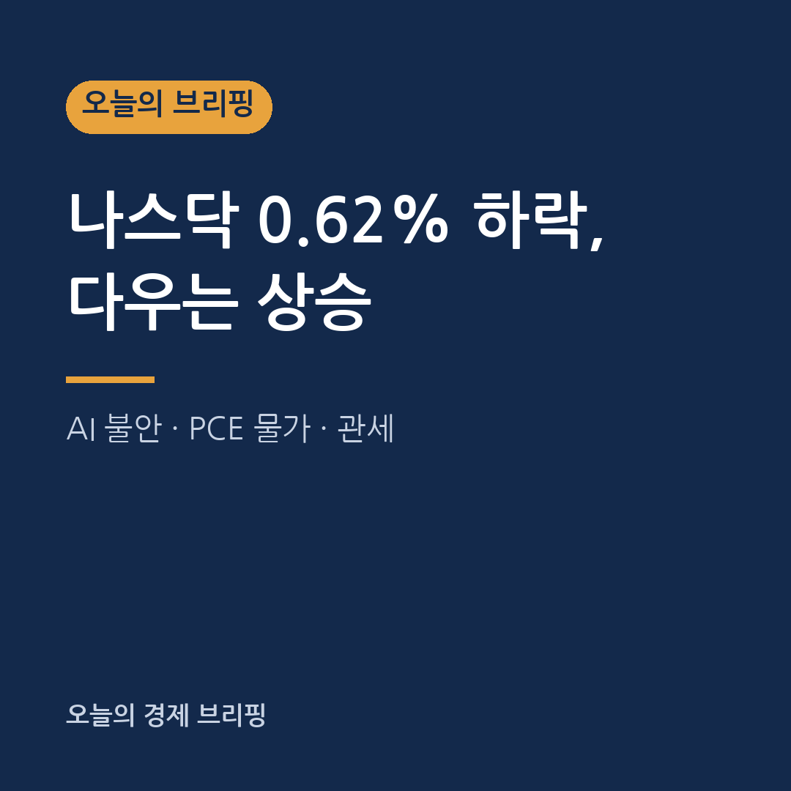
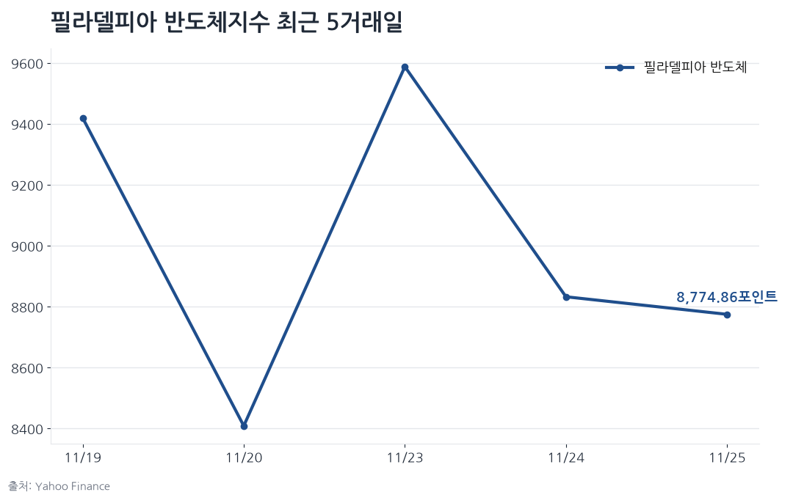

2026-11-26-0729-naver 발행 키트 · 이 페이지는 검색에 노출되지 않습니다.
제목
카테고리
오늘의 브리핑태그
본문 (그림·표 포함)
휴대폰 블로그 앱에서는 그림이 같이 붙지 않을 수 있어요. 그때는 [글자만 복사] 후 아래 이미지를 저장해 [그래프1]·[표1] 자리에 첨부하세요.

출근길에 간밤 미국 증시부터 확인하시는 분들, 어젯밤은 화면이 꽤 어지러웠을 거예요. 결과만 보면 다우는 오르고 나스닥은 내렸는데, 장중 흐름은 훨씬 거칠었거든요.
▶ 한 줄 총평 25일(현지시간) 미국 증시는 큰 폭 하락했다가 거의 다 되돌린 하루였어요. 지수는 엇갈렸지만 불안한 분위기는 그대로 남았습니다.
▶ 지수 성적표 다우지수는 50,182.95로 0.33% 올랐어요. S&P500은 7,182.78로 0.25% 내렸고, 나스닥은 23,585.80으로 0.62% 내렸습니다. 필라델피아 반도체지수도 0.65% 하락했어요.
25일 뉴욕증시 마감
| 지수 | 종가 | 등락률 |
|---|---|---|
| 다우 | 50,182.95 | +0.33% |
| S&P500 | 7,182.78 | -0.25% |
| 나스닥 | 23,585.80 | -0.62% |
| 필라델피아 반도체 | 8,774.86 | -0.65% |
출처: Yahoo Finance
장중에는 다우가 1,100포인트 넘게(2.2%) 빠졌고, 나스닥은 한때 4.6%까지 밀렸다고 해요. 그러다 막판에 낙폭을 크게 줄였습니다.

▶ 왜 흔들렸을까요 첫째는 AI 투자에 대한 걱정이에요. 엔비디아 CEO 복귀 소식에 올랐던 기술주가 힘이 빠지면서, 빚을 내서 AI 설비를 늘리는 기업들이 괜찮을지 다시 따져보는 분위기였어요. 엔비디아는 3.91%, 마이크론은 4.5% 내렸고 오라클은 5%쯤 빠졌습니다.
둘째는 물가예요. 10월 PCE 물가(미국 연준이 중시하는 소비 물가지표)가 1년 전보다 3.8% 올라 예상과 같았지만, 금리를 더 올릴 수 있다는 걱정은 이어졌어요.
셋째는 관세입니다. 미국이 우리나라를 포함한 14개 경제주체에 과잉생산 관세를 예고했다는 소식도 투자 심리를 눌렀어요.
▶ 환율·금리·유가 미 국채 10년물 금리는 4.85%로 내려왔어요. 원·달러 환율은 1,344.34원으로 소폭 올랐고, WTI 유가는 2.56% 오른 배럴당 84.15달러였습니다.
▶ 오늘 우리 증시에서 볼 것 반도체 쪽 흐름이 가장 궁금하실 텐데, 간밤 미국 반도체 종목이 약했던 만큼 장 초반 분위기를 먼저 살펴보세요. 환율이 1,340원대 중반에서 어떻게 움직이는지도 같이 보면 좋겠어요.
오늘 한 줄 정리: 지수는 버텼지만 AI·물가·관세 걱정은 아직 안 풀렸어요. 여러분은 오늘 어떤 지표를 제일 먼저 보세요? 댓글로 알려 주세요.
출처 (본문 맨 아래에 붙여넣기 권장)
- 한국경제, 뉴욕증시 브리핑(AI 투자 불안 관련), https://www.hankyung.com/article/2026112608776 - 연합뉴스, 뉴욕증시 AI 투자 불안 종합 기사, https://www.yna.co.kr/view/AKR20261126009851072 - 한국경제, 美 10월 PCE 물가 속보, https://www.hankyung.com/article/2026112506297 - 한국경제, 美 과잉생산 관세 예고 속보, https://www.hankyung.com/article/2026112506197 - 시세: Yahoo Finance